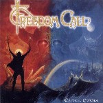

|
|
||
Freedom Call : Crystal Empire (2001) |
|

http://www.freedom-call.com |
1. The King of the Crystal Empire 0:30 |
8.5/10 |
|
Crystal Empire es el segundo álbum de la banda de Dan Zimmermann, batería del grupo alemán Gamma Ray. Es un disco conceptual, que continúa la historia de fantasía iniciada en su fantástico álbum debut, Stairway to Fairyland. El niño se ha convertido en el rey del imperio de cristal, y parte en busca del Ruby de Taragon, una de las cuatro piedras sagradas conocidas como "ojos del mundo", robado por el malvado príncipe Thorgan de Phantagor, para construir un imperio de maldad. Si alguien está pensando en que esto se parece al señor de los anillos, pues ya somos al menos dos... :-) El disco continúa el estilo del primero: power metal épico con importante presencia de teclados y coros, doble bombo y una voz, la de Chris Bay, cristalina y de tono bastante alto. Quizás en líneas generales este álbum sea un poco menos trepidante y original que el primero, ya que tiene más pasajes de ritmo moderado o incluso lento y recuerda bastante a aquel, pero es un excelente trabajo, con excelente producción y presentación. Además Dan Zimmermann no arriesga mucho, puesto que el estilo de este disco no es muy distinto a lo que hace con Gamma Ray. Tras una corta introducción hablada, "The King of the Crystal Empire", el disco comienza de manera excelente con "Freedom Call", auténtico himno de power metal, construido sobre el doble bombo y las guitarras, edulcorado con los teclados y los coros, y que sobresale por la cristalina voz de Chris Bay y un estribillo para recordar. "Rise Up" da un poco más de protagonismo a las guitarras, manteniendo el trepidante ritmo a doble bombo, los coros, y la brillante voz de Bay. "Farewell" sigue ofreciendo coros y un ritmo alegre pero con los suficientes cambios para mantener el interés. La quinta canción, "Pharao" es un tema épico, con los coros más majestuosos del álbum. Las guitarras le dan más fuerza que a los anteriores y los teclados aportan más variaciones y adornos. "Call of Fame" también tiene vocación de himno, aunque el resultado no es tan brillante como en "Freedom Call". Doble bombo, riffs algo repetitivos y un estribillo bueno pero no tan pegadizo como los de las primeras canciones. Del séptimo corte, "Heart of the Rainbow", diré que es del mismo estilo que la anterior, quizás con un tono algo más oscuro en algunas partes y con algunos solos de guitarra que se pueden destacar. "The Quest" comienza suave, con un piano acompañando a la voz de Chris Bay, pero pronto se convierte en un tema épico, con abundantes coros, de ritmo moderado y basado en riffs de guitarra potentes aunque algo simples. Varios cambios evitan que la canción se haga pesada, aunque en ningún momento es tan destacable como la otra canción de corte más épico, "Pharao". "Ocean" comienza con ritmo moderado y coros épicos, pero pronto se convierto en una canción rápida, con un interesante trabajo de superposición de voces, y un estribillo melodioso y pegadizo. "Palace of Fantasy" de nuevo trae coros y ritmo moderado, varias capas de voces, y distintas partes claramente diferenciadas, aunque sin un momento claramente culminante que la haga sobresalir del resto. La última canción, "The Wanderer", cierra el disco con ritmo algo lento pero muy marcado, melodía y sentimiento. En resumen un disco que seguro que resultará empalagoso para los amantes del metal más extremo y contundente, pero un auténtico placer para los amantes de coros, teclados y fantasía. Y si no lo eres, quizás este sea el momento de empezar... |
||
Rubén Béjar |
||